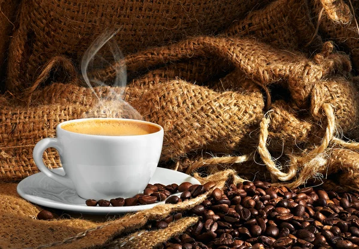

Métodos de preparación
Ookini significa gracias en Kansai, la región donde nació el método Kyoto drip. Servimos café de especialidad preparado con métodos lentos y con la atención que el grano merece.
Métodos de preparación
Filtrado por goteo con molienda media. El agua cae despacio sobre el café durante tres minutos y arrastra notas limpias y brillantes. Es el método más versátil de la barra y el mejor para descubrir la personalidad de un grano nuevo.